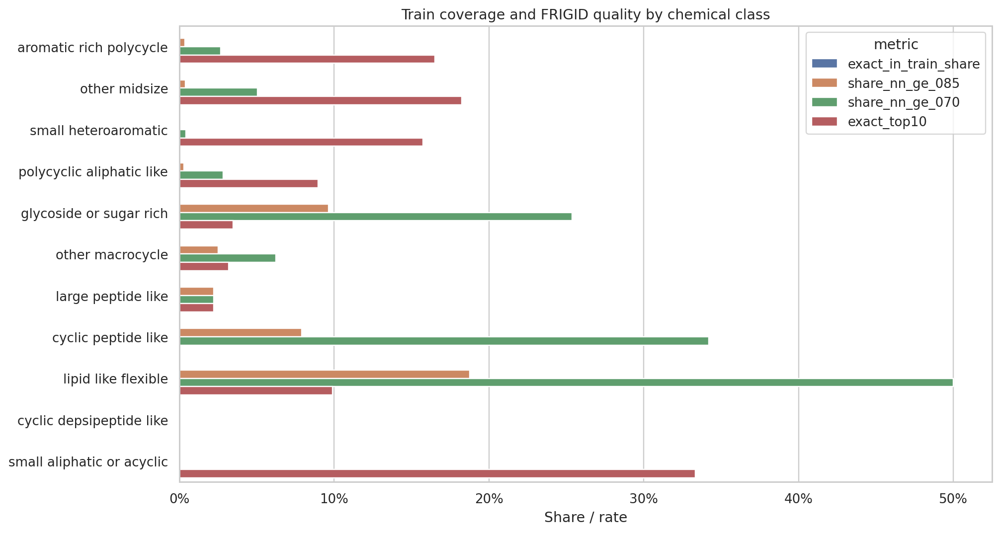
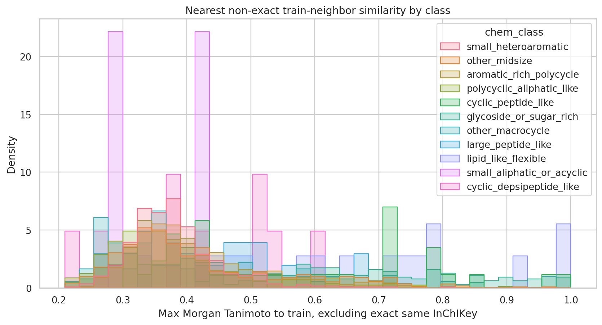
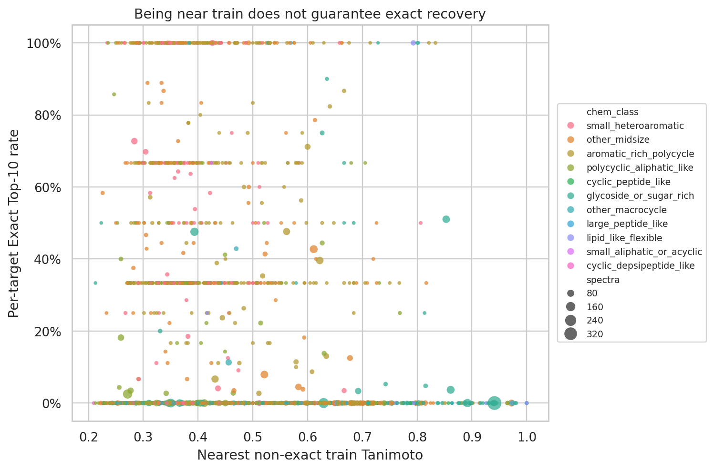
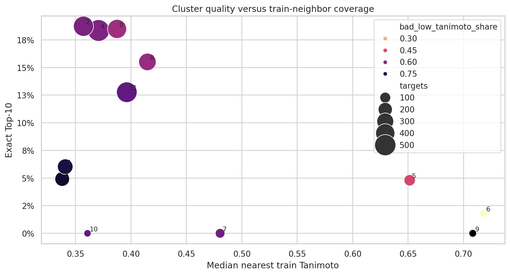
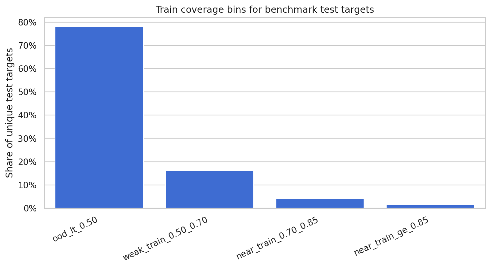

FRIGID Train Coverage EDA
Comparison of benchmark test targets against MassSpecGym train molecules using exact InChIKey overlap and nearest-neighbor Morgan fingerprint similarity.
Technical summary
Most hard chemistry is represented by broad class in train, but exact target overlap is the stronger question. The train split has 194,119 spectra and 22,746 unique InChIKeys. The evaluated benchmark has 2,905 unique targets. Exact same InChIKey appears in train for 0.00% of evaluated test targets.
Nearest-neighbor coverage is not enough to guarantee recovery. 1.48% of test targets have a non-exact train neighbor with Morgan Tanimoto >= 0.85, and 5.68% have one >= 0.70. The scatter and cluster tables show whether the failed classes are truly OOD or just hard despite similar train chemistry.
The hard classes remain: cyclic_peptide_like, cyclic_depsipeptide_like, large_peptide_like, other_macrocycle, glycoside_or_sugar_rich, polycyclic_aliphatic_like. These should be read together with exact train overlap and nearest-neighbor coverage before calling them OOD.
Coverage by chemical class

| chem_class | targets | spectra | exact_in_train_share | median_nn_train_tanimoto | p25_nn_train_tanimoto | p75_nn_train_tanimoto | share_nn_ge_085 | share_nn_ge_070 | exact_top10 | bad_low_tanimoto_share | mist_tanimoto | mol_wt_median | heavy_atoms_median | chiral_centers_median |
|---|---|---|---|---|---|---|---|---|---|---|---|---|---|---|
| aromatic_rich_polycycle | 1120.0000 | 4838.0000 | 0.0000 | 0.3900 | 0.3440 | 0.4697 | 0.0036 | 0.0268 | 0.1652 | 0.6170 | 0.5012 | 423.9725 | 30.0000 | 0.0000 |
| other_midsize | 494.0000 | 3255.0000 | 0.0000 | 0.3777 | 0.3288 | 0.4812 | 0.0040 | 0.0506 | 0.1825 | 0.5683 | 0.5540 | 470.0995 | 33.0000 | 1.0000 |
| small_heteroaromatic | 470.0000 | 1878.0000 | 0.0000 | 0.3730 | 0.3379 | 0.4084 | 0.0000 | 0.0043 | 0.1573 | 0.6895 | 0.4562 | 348.3640 | 24.0000 | 0.0000 |
| polycyclic_aliphatic_like | 351.0000 | 2531.0000 | 0.0000 | 0.3571 | 0.3107 | 0.4124 | 0.0028 | 0.0285 | 0.0895 | 0.7301 | 0.4654 | 451.6150 | 32.0000 | 3.0000 |
| glycoside_or_sugar_rich | 280.0000 | 3490.0000 | 0.0000 | 0.5265 | 0.3529 | 0.7037 | 0.0964 | 0.2536 | 0.0348 | 0.5796 | 0.5362 | 664.1535 | 46.5000 | 10.0000 |
| other_macrocycle | 80.0000 | 466.0000 | 0.0000 | 0.3599 | 0.2936 | 0.4716 | 0.0250 | 0.0625 | 0.0318 | 0.8063 | 0.5639 | 608.2840 | 44.0000 | 7.0000 |
| large_peptide_like | 45.0000 | 254.0000 | 0.0000 | 0.4250 | 0.3364 | 0.5068 | 0.0222 | 0.0222 | 0.0222 | 0.4151 | 0.6971 | 658.6520 | 47.0000 | 3.0000 |
| cyclic_peptide_like | 38.0000 | 165.0000 | 0.0000 | 0.4614 | 0.3889 | 0.7273 | 0.0789 | 0.3421 | 0.0000 | 0.6347 | 0.6040 | 813.9755 | 58.0000 | 6.0000 |
| lipid_like_flexible | 16.0000 | 105.0000 | 0.0000 | 0.6897 | 0.4929 | 0.7931 | 0.1875 | 0.5000 | 0.0990 | 0.4220 | 0.6886 | 483.6680 | 32.5000 | 0.5000 |
| cyclic_depsipeptide_like | 9.0000 | 95.0000 | 0.0000 | 0.4253 | 0.3871 | 0.5238 | 0.0000 | 0.0000 | 0.0000 | 0.7312 | 0.6380 | 751.9220 | 54.0000 | 7.0000 |
| small_aliphatic_or_acyclic | 2.0000 | 5.0000 | 0.0000 | 0.3606 | 0.3287 | 0.3924 | 0.0000 | 0.0000 | 0.3333 | 0.6667 | 0.5095 | 293.8630 | 21.0000 | 1.5000 |
Nearest train neighbors


| train_coverage_bin | targets | spectra | exact_in_train_share | median_nn_train_tanimoto | p25_nn_train_tanimoto | p75_nn_train_tanimoto | share_nn_ge_085 | share_nn_ge_070 | exact_top10 | bad_low_tanimoto_share | mist_tanimoto | mol_wt_median | heavy_atoms_median | chiral_centers_median |
|---|---|---|---|---|---|---|---|---|---|---|---|---|---|---|
| ood_lt_0.50 | 2270.0000 | 10813.0000 | 0.0000 | 0.3625 | 0.3239 | 0.4047 | 0.0000 | 0.0000 | 0.1380 | 0.6682 | 0.4892 | 422.3950 | 30.0000 | 0.0000 |
| weak_train_0.50_0.70 | 470.0000 | 3864.0000 | 0.0000 | 0.5750 | 0.5278 | 0.6271 | 0.0000 | 0.0000 | 0.1494 | 0.5275 | 0.5629 | 486.5355 | 35.0000 | 1.0000 |
| near_train_0.70_0.85 | 122.0000 | 1248.0000 | 0.0000 | 0.7428 | 0.7189 | 0.7879 | 0.0000 | 1.0000 | 0.0984 | 0.4413 | 0.6351 | 636.1220 | 45.0000 | 4.0000 |
| near_train_ge_0.85 | 43.0000 | 1157.0000 | 0.0000 | 0.9200 | 0.8878 | 0.9687 | 1.0000 | 1.0000 | 0.0127 | 0.4120 | 0.6407 | 768.7650 | 54.0000 | 14.0000 |
Coverage by fingerprint cluster

| cluster | targets | spectra | exact_in_train_share | median_nn_train_tanimoto | p25_nn_train_tanimoto | p75_nn_train_tanimoto | share_nn_ge_085 | share_nn_ge_070 | exact_top10 | bad_low_tanimoto_share | mist_tanimoto | mol_wt_median | heavy_atoms_median | chiral_centers_median |
|---|---|---|---|---|---|---|---|---|---|---|---|---|---|---|
| 7.0000 | 71.0000 | 363.0000 | 0.0000 | 0.4804 | 0.4130 | 0.6228 | 0.0423 | 0.1831 | 0.0000 | 0.6362 | 0.6032 | 788.9470 | 57.0000 | 6.0000 |
| 9.0000 | 30.0000 | 971.0000 | 0.0000 | 0.7084 | 0.6821 | 0.7197 | 0.0000 | 0.6000 | 0.0000 | 0.8639 | 0.5469 | 665.7655 | 48.0000 | 2.0000 |
| 10.0000 | 24.0000 | 1025.0000 | 0.0000 | 0.3607 | 0.3443 | 0.4010 | 0.0000 | 0.0000 | 0.0000 | 0.6627 | 0.5126 | 629.7470 | 45.0000 | 14.0000 |
| 6.0000 | 33.0000 | 315.0000 | 0.0000 | 0.7183 | 0.6538 | 0.7812 | 0.0909 | 0.5455 | 0.0182 | 0.1815 | 0.6885 | 756.7070 | 53.0000 | 14.0000 |
| 5.0000 | 114.0000 | 1836.0000 | 0.0000 | 0.6514 | 0.5620 | 0.8097 | 0.2193 | 0.4561 | 0.0480 | 0.4651 | 0.5711 | 728.6530 | 50.5000 | 12.0000 |
| 3.0000 | 218.0000 | 1177.0000 | 0.0000 | 0.3379 | 0.2977 | 0.4702 | 0.0183 | 0.0642 | 0.0491 | 0.8078 | 0.4319 | 496.5560 | 35.0000 | 4.0000 |
| 1.0000 | 249.0000 | 2288.0000 | 0.0000 | 0.3407 | 0.2892 | 0.4184 | 0.0120 | 0.0402 | 0.0603 | 0.7828 | 0.5195 | 569.7860 | 41.0000 | 8.0000 |
| 11.0000 | 469.0000 | 2314.0000 | 0.0000 | 0.3962 | 0.3438 | 0.4848 | 0.0085 | 0.0320 | 0.1276 | 0.6637 | 0.4751 | 408.4100 | 29.0000 | 0.0000 |
| 8.0000 | 326.0000 | 1664.0000 | 0.0000 | 0.4148 | 0.3615 | 0.4909 | 0.0000 | 0.0153 | 0.1551 | 0.5719 | 0.5327 | 453.5745 | 32.0000 | 0.0000 |
| 4.0000 | 527.0000 | 2087.0000 | 0.0000 | 0.3708 | 0.3377 | 0.4229 | 0.0000 | 0.0133 | 0.1835 | 0.6143 | 0.5095 | 413.9090 | 29.0000 | 0.0000 |
| 0.0000 | 398.0000 | 1636.0000 | 0.0000 | 0.3874 | 0.3515 | 0.4444 | 0.0025 | 0.0226 | 0.1849 | 0.5595 | 0.5351 | 411.1785 | 29.0000 | 0.0000 |
| 2.0000 | 446.0000 | 1406.0000 | 0.0000 | 0.3571 | 0.3117 | 0.4102 | 0.0000 | 0.0090 | 0.1873 | 0.6171 | 0.4918 | 387.5925 | 28.0000 | 0.0000 |
Coverage bins

Manual inspection table
The case table includes failed test targets, their nearest non-exact train molecule, class, cluster, and similarity.
| target_inchi_key | chem_class | cluster | spectra | exact_top10 | bad_low_tanimoto_share | mist_tanimoto | exact_in_train | max_train_tanimoto_excluding_exact | nearest_nonself_train_inchikey | nearest_nonself_train_smiles | first_smiles |
|---|---|---|---|---|---|---|---|---|---|---|---|
| MLSQGNCUYAMAHD | cyclic_depsipeptide_like | 4.0000 | 3.0000 | 0.0000 | 1.0000 | 0.6905 | False | 0.2097 | BDNGXZFDPYOICT | COC(=O)C1CC(CN1C(=O)CC2=CNC3=CC=CC=C32)OC4=CC=CC=C4F | CC1(CC1)S(=O)(=O)NC(=O)[C@]2(C[C@H]2C(F)F)NC(=O)[C@@H]3C[C@@H]4CN3C(=O)[C@@H](NC(=O)O[C@@H]5CCC[C@H]5OC/C=C/C(C6=NC7=CC=CC=C7N=C6O4)(F)F)C(C)(C)C |
| YQLQWGVOWKPLFR | polycyclic_aliphatic_like | 1.0000 | 1.0000 | 0.0000 | 1.0000 | 0.1273 | False | 0.2128 | PNUZTGLWURTQTO | C[C@@H]1[C@@H]2[C@H](C[C@@](C([C@H]2OC1=O)/C(=C/O[C@H]3[C@@H]([C@H]([C@@H]([C@H](O3)CO)O)O)O)/C)(C)C=C)O | C[C@@H]1[C@](C(=O)[C@H]([C@@H](O1)O[C@]23[C@H](C=CC2=CC4=C3C=C(C=C4Cl)CC#N)O)O)(C)O |
| NEINCGYMLGLOMN | polycyclic_aliphatic_like | 1.0000 | 1.0000 | 0.0000 | 1.0000 | 0.4262 | False | 0.2182 | QUQMZWZRFQKNFP | CC(=O)OC1CC2=CC3=C(C=C2OC1(C)C)OC=C(C3=O)C4=C(C5=C(C=C4)OC(C=C5)(C)C)OC | C/C(=C\[C@@H]1C[C@]2([C@@H]3CC[C@H]4CC5=C([C@@]4([C@]3(CC[C@@]2(O1)O)C)C)NC6=C5C=C7C(=C6)C[C@H]8C7=CC(OC8(C)C)(C)C)C)/C(=O)O |
| SVKHAVSUBSUFBQ | other_midsize | 3.0000 | 18.0000 | 0.0000 | 1.0000 | 0.2820 | False | 0.2222 | DUMNOWYWTAYLJN | CCOC(=O)C1CCCNC1=O | CCC/C(=N/OCC)/C1=C(CC(CC1=O)C2CCCS(=O)C2)O |
| ARFHIAQFJWUCFH | small_heteroaromatic | 2.0000 | 1.0000 | 0.0000 | 1.0000 | 0.3929 | False | 0.2237 | NUSUDDUOVSICAS | CN1CCC(CC1)OC(=O)C2=CC3=C(C=CC(=C3)[N+](=O)[O-])OC2=O | C[C@H]1CS(=O)(=O)CCN1/N=C\C2=CC=C(O2)[N+](=O)[O-] |
| PLSGFSOLCKJLJQ | glycoside_or_sugar_rich | 1.0000 | 1.0000 | 0.0000 | 1.0000 | 0.5200 | False | 0.2266 | VNTDWOKCKOGMPX | CC(=CCCC1(C2CCC(C3C2C4=C(O1)C=C5C(=C4O3)CN(C5=O)C(CCC(=O)O)C(=O)O)(C)O)C)C | CC(=C)[C@H]1CC2=C3N1C4=C(C3=CC5=C2[C@H]([C@H]6C5=CC(OC6(C)C)(C)C)O)C[C@H]7[C@]4([C@]8(CC[C@]9([C@]([C@@H]8CC7)(C[C@H](O9)/C=C(\C)/C(=O)O)C)O)C)C |
| JFTUBAXWPXSZEH | other_midsize | 3.0000 | 5.0000 | 0.0000 | 1.0000 | 0.2062 | False | 0.2268 | BPRHUIZQVSMCRT | CC(C)C1=NC(=NC(=C1/C=C/[C@H](C[C@H](CC(=O)O)O)O)C2=CC=C(C=C2)F)N(C)S(=O)(=O)C | C/C=C/C=C/C=C/C1=CC2=C(C(=O)C(C(=O)C2=CN1CC(=O)O)(C)OC(=O)CC(CC(C)O)O)Cl |
| DFVYLDHDFLHIAA | polycyclic_aliphatic_like | 1.0000 | 2.0000 | 0.0000 | 1.0000 | 0.4571 | False | 0.2277 | CKLPLPZSUQEDRT | C[C@H]1CC2=C([C@]3(N1)C4=C(C=CC(=C4)Cl)NC3=O)NC5=CC(=C(C=C25)F)Cl | C[C@]12CC[C@]34C(=CC(=O)[C@H](O3)C(O4)(C)C)[C@@]1(CC[C@@H]5[C@@]2(C6=C(C5)C7=CC8=C(C=C7N6)C9=CC(OC([C@H]9[C@@H]8O)(C)C)(C)C)C)O |
| LHJPHMKIGRLKDR | polycyclic_aliphatic_like | 2.0000 | 1.0000 | 0.0000 | 1.0000 | 0.7258 | False | 0.2278 | ZPUCINDJVBIVPJ | CN1[C@H]2CC[C@@H]1[C@H]([C@H](C2)OC(=O)C3=CC=CC=C3)C(=O)OC | CC1C(CC2CC(NC3=NCC1N23)C(C4=CC(=O)NC(=O)N4)O)OS(=O)(=O)O |
| LRBUWASGIAAHOJ | polycyclic_aliphatic_like | 3.0000 | 1.0000 | 0.0000 | 1.0000 | 0.1552 | False | 0.2281 | UQRORFVVSGFNRO | CCCCN1C[C@@H]([C@H]([C@@H]([C@H]1CO)O)O)O | CCCC[C@]12CC3[C@H]4CCC(C3N(C1)CCCC)(C2N4CCCC)CCCC |
| HWSQVPGTQUYLEQ | other_midsize | 3.0000 | 10.0000 | 0.0000 | 1.0000 | 0.5850 | False | 0.2283 | VRWFEVIVOZKBJA | C/C=C/C1=CC2=CC(=O)C(C(=O)C2=CO1)(C)OC(=O)C3=C(C=C(C=C3C)O)OC | CC[C@H](C)/C=C/C1=CC2=C(C(=O)[C@@]3(C(=C(C(=O)O3)C(=O)[C@@H](C)[C@@H](C)O)C2=CO1)C)Cl |
| DSPNTLCJTJBXTD | other_macrocycle | 1.0000 | 2.0000 | 0.0000 | 0.5000 | 0.8335 | False | 0.2289 | MJMMUATWVTYSFD | CC1CC(=O)OC(C(/C=C/C(=O)OC(C(/C=C/C(=O)O1)O)C)O)C | C[C@H]1C[C@H](CC(=O)O[C@H](C/C(=C/C=C\C(=O)O[C@@H](CC2=NC1=CS2)/C=C(\C)/C=C/C(=C/CN(C)C)/C)/C)C)N |
| QYRAHJVRFPJIQW | polycyclic_aliphatic_like | 1.0000 | 2.0000 | 0.0000 | 1.0000 | 0.3885 | False | 0.2300 | CKLPLPZSUQEDRT | C[C@H]1CC2=C([C@]3(N1)C4=C(C=CC(=C4)Cl)NC3=O)NC5=CC(=C(C=C25)F)Cl | C[C@]12CC[C@]34C(=CC(=O)[C@H](O3)C(O4)(C)C)[C@@]1(CC[C@@H]5[C@@]2(C6=C(C5)C7=C(N6)C=C8C(=C7)CC9=C8CC(OC9(C)C)(C)C)C)O |
| YAGQIZPAJNEIKG | polycyclic_aliphatic_like | 1.0000 | 2.0000 | 0.0000 | 1.0000 | 0.4769 | False | 0.2300 | CKLPLPZSUQEDRT | C[C@H]1CC2=C([C@]3(N1)C4=C(C=CC(=C4)Cl)NC3=O)NC5=CC(=C(C=C25)F)Cl | C[C@]12CC[C@]34C(=CC(=O)[C@H](O3)C(O4)(C)C)[C@@]1(CC[C@@H]5[C@@]2(C6=C(C5)C7=C(N6)C=C8C(=C7)C[C@H]9C8=CC(OC9(C)C)(C)C)C)O |
| AIECUUXSLHXKBY | other_midsize | 3.0000 | 1.0000 | 0.0000 | 1.0000 | 0.2083 | False | 0.2321 | OOQUCJPSNWQKFG | C/C=C/C=C/[C@H]1[C@H](C=CC(=O)O1)O | C/C=C/C(=O)NC1=CC=C2[C@@H](CN2C(=O)O1)O |
| REKWVHVBDQXQLB | polycyclic_aliphatic_like | 1.0000 | 1.0000 | 0.0000 | 1.0000 | 0.8000 | False | 0.2326 | RMZUOIQVOIREPM | CC1CCC2(C(C1(C)CC(=O)C3=COC=C3)CCC4C2(O4)C)C | CC(C)C1CCC2(C3CCC45CCCC4C2(C1N5C3)CCC(=O)C6(COC7(CCC6O7)C)C)C |
| HFRYZYZRMDGKCL | small_heteroaromatic | 2.0000 | 3.0000 | 0.0000 | 1.0000 | 0.1441 | False | 0.2333 | NDMFYLCEHWHGPB | CC(C)C1=NN=C(O1)C2CCN(CC2)C(=O)CC3=CC=C(C=C3)SC(C)C | CC(C)SC1=NN=C(O1)CCCCC2=NN=C(O2)SC(C)C |
| RNIADBXQDMCFEN | other_midsize | 1.0000 | 4.0000 | 0.0000 | 0.2500 | 0.6453 | False | 0.2353 | KALVKBCVJGXOKE | CC1CC2=C(C3C(=O)C4=C(C(C3(C5C2O5)O)O)C(=CC=C4)O)C(=O)C1 | CN(C)[C@H]1[C@@H]2[C@H]([C@@H]3C(=C)C4=C(C=CC(=C4C(=C3C(=O)[C@@]2(C(=C(C1=O)C(=O)N)O)O)O)O)Cl)O |
| YZQRMJFPWMHAJV | polycyclic_aliphatic_like | 1.0000 | 2.0000 | 0.0000 | 1.0000 | 0.5289 | False | 0.2381 | RVIIZRJMWFSNER | C[C@@]1(CC[C@H]2[C@@]3([C@@]1([C@@H]4[C@@H](O4)C(C5=C3C6=C(C2(C)C)C=CC=C6N5)(C)C)[N+]#[C-])O)C=C | CC(=C)[C@@H]1C(C=C2[C@@H](O1)CC[C@]3([C@]2(CC[C@@H]4[C@@]3(C5=C(C4)C6=C(N5)C=CC7=C6[C@H]8[C@H](C[C@@H]8C(C)(C)O)C(=C)C7)C)O)C)O |
| CSPPKDPQLUUTND | other_midsize | 3.0000 | 9.0000 | 0.0000 | 1.0000 | 0.2344 | False | 0.2388 | YXBHWZYFNLJVNP | CCOC(=O)C(C)OC1=CC2=C(C=C1)C(=CC(=O)O2)C | CCCC(=NOCC)C1=C(CC(CC1=O)CC(C)SCC)O |
| LREHNMAHTSUHBC | other_midsize | 3.0000 | 4.0000 | 0.0000 | 1.0000 | 0.2709 | False | 0.2391 | UDYISUDUTWQUBB | C/C=C/C(CC1C(=O)C=CC1(CCCCCCCC(=O)O)O)OC(=O)C | C/C=C/C=C/C=C/C1=CC2=C(C(=O)C(C(=O)C2=CN1CCCC(=O)O)(C)OC(=O)CC(CC(C)O)O)Cl |
| ATAIRWBABKGUFL | glycoside_or_sugar_rich | 3.0000 | 7.0000 | 0.0000 | 1.0000 | 0.2489 | False | 0.2414 | KCPUSSJDCHTZSH | C/C=C/CCC(=O)[C@@H]1[C@H]([C@H]2/C(=C(\C=C\C=C\C)/O)/C(=O)[C@@]1(C(=O)C2(C)O)C)[C@@]3(C(=C(C(=O)O3)C)O)C | C/C=C/C=C/C1=C2C3C4(C(=C(C5C(C2=O)(C6(C3(OC4(C5(O6)C)O)C)O)C)C(=O)CC(/C=C/C)O)O1)C |
| HWGQMRYQVZSGDQ | aromatic_rich_polycycle | 2.0000 | 6.0000 | 0.0000 | 0.8333 | 0.4300 | False | 0.2414 | AHEPPHKAWGPZHP | C1CCCC(CC1)NC(=O)C2CC(=O)N(C2)CCC3=CNC4=C3C=C(C=C4)F | CN1C(=NC=N1)[C@@H]2[C@H](NC3=CC(=CC4=C3C2=NNC4=O)F)C5=CC=C(C=C5)F |
| SPEGERVLTUWZPA | small_heteroaromatic | 2.0000 | 3.0000 | 0.0000 | 0.3333 | 0.9318 | False | 0.2414 | PHSPJQZRQAJPPF | CNCCC1=CN=CN1 | CCOCC1(CCC(CC1)C2=C(C=NN2)CN(C)CCNC)COCC |
| YIGXPIUPFFVJRJ | other_midsize | 3.0000 | 4.0000 | 0.0000 | 1.0000 | 0.1728 | False | 0.2418 | PLYNBLLEIDIMDU | CC1CC(C2=C(C1)C=CC(=C2/C=C/C(CC(CC(=O)OC)O)O)C)OC(=O)C | C/C=C/C=C/C=C/C1=CC2=C(C=N1)C(=O)C(C(=C2Cl)O)(C)OC(=O)CC(CC(C)O)O |
| UNCVXXVJJXJZII | glycoside_or_sugar_rich | 1.0000 | 1.0000 | 0.0000 | 1.0000 | 0.9231 | False | 0.2419 | VGRPJNIVIGBNNK | CC1CCC2C(C(CCC2(C13CC4=C(C=C5C(=C4O3)CN(C5=O)C(CCC(=O)N)C(=O)O)O)C)O)(C)C | CC(=C)[C@H]1C(=O)C2=C3N1C4=C(C3=CC5=C2[C@H]([C@H]6C5=CC(OC6(C)C)(C)C)O)C[C@H]7[C@]4([C@]8(CC[C@@H]([C@@]([C@@H]8CC7)(C)/C=C/C=C(\C)/C(=O)O)O)C)C |
| BBMULGJBVDDDNI | glycoside_or_sugar_rich | 3.0000 | 24.0000 | 0.0000 | 1.0000 | 0.1881 | False | 0.2435 | PGHMRUGBZOYCAA | C[C@H](CCC(=O)O)C[C@H](C)C[C@H](C)C(=O)/C=C(/[C@H](C)C[C@H](C)C/C=C/[C@@H](C)[C@H]([C@@H](C)[C@H](C[C@@H]1CC[C@@](O1)(C)[C@H]2CC[C@@](O2)(C)[C@@H](C)O)O)O)\O | CC[C@H]([C@@H]1[C@H](C[C@@](O1)(CC)[C@H]2CC[C@@]([C@@H](O2)C)(CC)O)C)C(=O)[C@@H](C)[C@H]([C@H](C)CCC3=C(C(=C(C=C3)C)O)C(=O)O)O |
| WCAKZBQMVHYHED | polycyclic_aliphatic_like | 1.0000 | 1.0000 | 0.0000 | 1.0000 | 0.7157 | False | 0.2441 | FVWRHZWMISXFKU | CC1CCC2C(C(CCC2(C13CC4=C(C=C5C(=C4O3)CN(C5=O)C(CCCN=C(N)N)C(=O)O)O)C)O)(C)C | CC(=C)[C@H]1CC2=C3N1C4=C(C3=CC5=C2[C@H]([C@H]6C5=CC(OC6(C)C)(C)C)O)C[C@H]7[C@]4([C@]8(CC[C@@H]([C@@]([C@@H]8CC7)(C)/C=C/C=C(\C)/C(=O)O)O)C)C |
| JPGNVTPOQRXCDY | other_macrocycle | 1.0000 | 1.0000 | 0.0000 | 1.0000 | 0.5529 | False | 0.2449 | XOZIUKBZLSUILX | C[C@H]1CCC/C(=C\C[C@H](OC(=O)C[C@@H](C(C(=O)[C@@H]([C@H]1O)C)(C)C)O)/C(=C/C2=CSC(=N2)C)/C)/C | C[C@@H]1C2=NC(=CS2)/C=C\C=C\C(=O)C/C=C(/CC[C@@](CC(=O)N1)([C@@H](C)C(=O)O)S)\C |
| MCGZCRGDIAILMI | glycoside_or_sugar_rich | 1.0000 | 1.0000 | 0.0000 | 1.0000 | 0.4552 | False | 0.2458 | QJFJALJGKXGWFO | CC(=CCC1=C(C=CC(=C1OC)C2COC3=C(C2=O)C(=C4C=CC(OC4=C3)(C)C)O)O)C | CC(=CCC1=C2C(=CC3=C1[C@H]([C@H]4C3=CC(OC4(C)C)(C)C)O)C5=C(N2)[C@]6([C@H](C5)CC[C@@H]7[C@@]6(CC[C@]8([C@]7(C[C@H](O8)/C=C(\C)/C(=O)O)C)O)C)C)C |